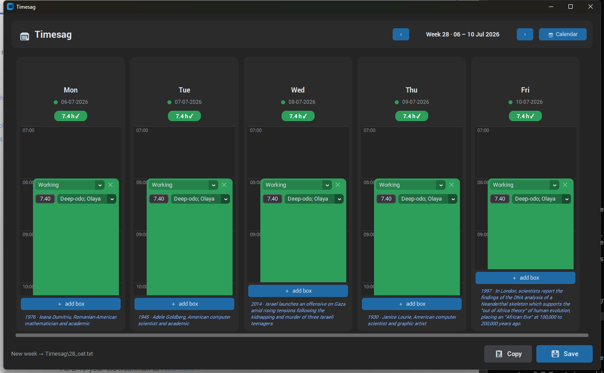

Each weekday is a vertical time axis you fill with colour-coded boxes — working, holiday, sick, paid time off or bank holiday. Timesag writes them out in the exact fixed-width format the payroll system expects, one line per box.
Boxes auto-stack from a start time; height is proportional to hours. Minimum 0.5 h so controls always fit.
Type, hours and project live inside each box. Change hours and the box resizes on the timeline.
Drag a box to move the day's start (snaps to half-hours); double-click to reset to 08:00.
A colour-coded pill shows the day's summed hours against a 7.4 h target.
World, Danish, Spanish, British and Indian observances, each with a hand-drawn flag.
Write the week to Timesag/<week>_oat.txt or copy the lines to the clipboard. The web version copies only — it keeps the week in your browser instead.
Every column shows a clickable Wikipedia fact for that date, from the free Wikimedia “On This Day” feed. The item is chosen by a process designed to surface real history and under-represented figures:
P21 (sex/gender ≠ male → women, non-binary) and P91 (recorded sexual orientation → LGBTQ+). If one exists, a coin flip features them instead of the default event.
Why not ethnic group? Wikidata's P172 is filled for
almost every notable figure (Newton, Einstein included), so its presence is no signal
of a minority and would flag nearly everyone — defeating the 50% balance. It is
deliberately not used; boosting specific ethnic minorities would need a curated list.
git clone https://github.com/oateiva/OATimesag.git
cd OATimesag
pip install -r requirements.txt
python timesag.pyWorking-day projects live in projects.json; special days in observances.json (auto-seeded, editable).
One line per box: 110000,DD-MM-YYYY,0,R,0,<code>,<hours>,T,<f9>,,<description>
| Type | code | f9 | line? |
|---|---|---|---|
| Working | project | project | ✅ |
| Holiday | 14002 | 94 | ✅ |
| Sick | 14003 | 95 | ✅ |
| Paid time off | 14004 | 90 | ✅ |
| Bank holiday | — | — | ❌ no line |